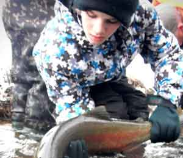

FUNDRAISING

! FUNDRAISING!Efforts are underway to get the $$$ TRAA Trout Hatchery

$$ Continuation of theSalmonid Monitoring Program

$$ Komoka Creek Hydrological Study

Please email us. if you'd like to take an active role in raising the funds needed for these and other important TRAA activities.

YOU GET TO BE A TRAA MEMBER FOR A WHOLE YEAR FOR ONLY $25.00DuesYour membership